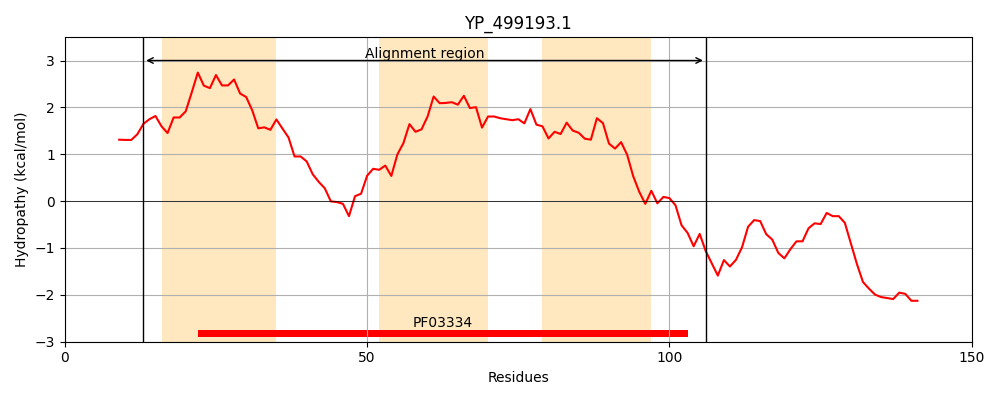
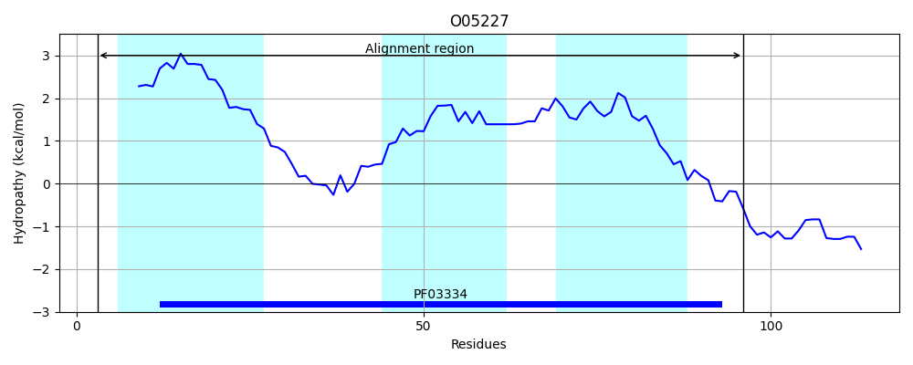
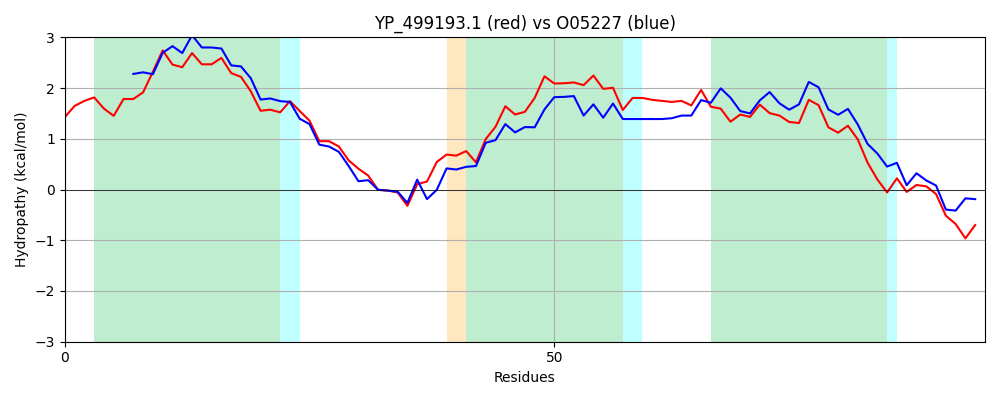

Hit Accession: O05227
Hit TCID: 2.A.63.1.4
Hit Description: gnl|BL_ORD_ID|6724 gnl|TC-DB|O05227|2.A.63.1.4 Na(+)/H(+) antiporter subunit G - Bacillus subtilis.
Mach Len: 94
e:0.000000
Query TMS Count : 3
Hit TMS Count: 3
TMS-Overlap Score: 2.800000
Predicted Substrates:CHEBI:9175;sodium(1+), CHEBI:5584;hydron
BLAST Alignment:
| Protein Hydropathy Plots: | |
|---|---|
|  |  |
Pairwise Alignment-Hydropathy Plot: | |
|  | |